- 00 导读 如何打造高质量的应用？.md
- 00 开篇词 焦虑的移动开发者该如何破局？.md
- 01 崩溃优化（上）：关于“崩溃”那些事儿.md
- 02 崩溃优化（下）：应用崩溃了，你应该如何去分析？.md
- 03 内存优化（上）：4GB内存时代，再谈内存优化.md
- 04 内存优化（下）：内存优化这件事，应该从哪里着手？.md
- 05 卡顿优化（上）：你要掌握的卡顿分析方法.md
- 06 卡顿优化（下）：如何监控应用卡顿？.md
- 06补充篇 卡顿优化：卡顿现场与卡顿分析.md
- 07 启动优化（上）：从启动过程看启动速度优化.md
- 08 启动优化（下）：优化启动速度的进阶方法.md
- 09 I_O优化（上）：开发工程师必备的I_O优化知识.md
- 10 I_O优化（中）：不同I_O方式的使用场景是什么？.md
- 11 I_O优化（下）：如何监控线上I_O操作？.md
- 12 存储优化（上）：常见的数据存储方法有哪些？.md
- 13 存储优化（中）：如何优化数据存储？.md
- 14 存储优化（下）：数据库SQLite的使用和优化.md
- 15 网络优化（上）：移动开发工程师必备的网络优化知识.md
- 16 网络优化（中）：复杂多变的移动网络该如何优化？.md
- 17 网络优化（下）：大数据下网络该如何监控？.md
- 18 耗电优化（上）：从电量优化的演进看耗电分析.md
- 19 耗电优化（下）：耗电的优化方法与线上监控.md
- 20 UI 优化（上）：UI 渲染的几个关键概念.md
- 21 UI 优化（下）：如何优化 UI 渲染？.md
- 22 包体积优化（上）：如何减少安装包大小？.md
- 23 包体积优化（下）：资源优化的进阶实践.md
- 24 想成为Android高手，你需要先搞定这三个问题.md
- 25 如何提升组织与个人的研发效能？.md
- 26 关于编译，你需要了解什么？.md
- 27 编译插桩的三种方法：AspectJ、ASM、ReDex.md
- 28 大数据与AI，如何高效地测试？.md
- 29 从每月到每天，如何给版本发布提速？.md
- 30 数据评估（上）：如何实现高可用的上报组件？.md
- 31 数据评估（下）：什么是大数据平台？.md
- 32 线上疑难问题该如何排查和跟踪？.md
- 33 做一名有高度的移动开发工程师.md
- 34 聊聊重构：优秀的架构都是演进而来的.md
- 35 Native Hook 技术，天使还是魔鬼？.md
- 36 跨平台开发的现状与应用.md
- 37 移动开发新大陆：工作三年半，移动开发转型手游开发.md
- 38 移动开发新大陆：Android音视频开发.md
- 39 移动开发新大陆： 边缘智能计算的趋势.md
- 40 动态化实践，如何选择适合自己的方案？.md
- 41 聊聊Flutter，面对层出不穷的新技术该如何跟进？.md
- 42 Android开发高手课学习心得.md
- Android JVM TI机制详解（内含福利彩蛋）.md
- Android工程师的“面试指南”.md
- Native下如何获取调用栈？.md
- 专栏学得苦？可能你还需要一份配套学习书单.md
- 专栏学得苦？可能是方法没找对.md
- 程序员修炼之路 设计能力的提升途径.md
- 练习Sample跑起来 ASM插桩强化练习.md
- 练习Sample跑起来 唯鹿同学的练习手记 第1辑.md
- 练习Sample跑起来 唯鹿同学的练习手记 第2辑.md
- 练习Sample跑起来 唯鹿同学的练习手记 第3辑.md
- 练习Sample跑起来 热点问题答疑第1期.md
- 练习Sample跑起来 热点问题答疑第2期.md
- 练习Sample跑起来 热点问题答疑第3期.md
- 练习Sample跑起来 热点问题答疑第4期.md
- 结束语 移动开发的今天和明天.md
- 聊聊Framework的学习方法.md
15 网络优化（上）：移动开发工程师必备的网络优化知识
专栏前面我们已经学习过文件I/O和存储优化，相信你已经掌握了文件I/O和存储的性能分析以及优化思路。今天我们就再接再厉，继续学习系统中另外一种常见的I/O——网络I/O。
我在写今天的文章时，回想了一下大学期间学的那本几百页厚的《计算机网络》，当时学得也是云里雾里，网络的确涉及了方方面面太多的知识。那我们作为移动开发者来说，都需要掌握哪些必备的网络知识呢？文件I/O跟网络I/O又有哪些差异呢？
今天我们不谈“经典巨著”，一起来解决移动开发工程师面对的网络问题。
网络基础知识
现在已经很难找到一款完全不需要网络的应用，即使是单机应用，也会存在数据上报、广告等各种各样的网络请求。既然网络已经无处不在，我们必须要掌握哪些基础知识呢？
1. 无线网络
在过去十年，移动互联网的高速增长离不开无线网络的普及。无线网络多种多样，而且各有各的特点，并且适合使用的场景也不同。
下图是iPhone XS支持的无线网络类型，你可以看到WiFi、蜂窝网络、蓝牙、NFC这些都是我们日常经常使用的无线网络类型。
“千兆级LTE”指的是蜂窝网络在理论上速度可以达到光纤级别的1Gbps（125MB/s）。虽然基于4G标准，但通过MIMO（多输入多输出）、使用载波聚合的LAA等技术，现在已经发展到千兆级LTE。2020年我们也即将迎来5G的商用，它的理论传输速率可以达到20Gbps。目前5G的标准还没有完全release，关于5G的原理我推荐你看看这篇文章。
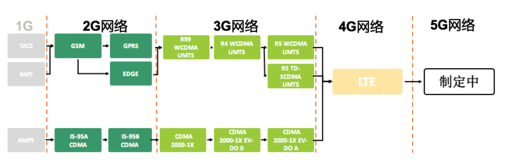
“802.11ac无线网络”指的是我们经常使用的WiFi。WiFi由IEEE定义和进行标准化规范，跟任何流行的技术一样，IEEE也一直在积极地发布新的协议。目前最常用的是802.11ac标准，它的理想速率可以达到866.7Mbps。
从硬件维度上来看，所有的无线网络都通过基带芯片支持，目前高通在基带芯片领域占据了比较大的优势。之前由于苹果和高通的专利诉讼，iPhone XS选用了英特尔的基带芯片，但同时也出现大量的用户投诉网络连接异常。
市面上有那么多的无线网络标准和制式，还有双卡双待等各种特色功能，因此基带芯片对技术的要求非常高。随着未来5G的商用与普及，国内也会迎来新的一波换机潮。这对各大芯片厂商来说是机遇也是挑战，目前高通、MTK、华为都已经发布了5G基带芯片。如果你对当前的5G格局感兴趣，可以阅读《全世界5G格局》。
2. Link Turbo
像5G这种新的标准，可以极大地提升网络速度，但缺点是它需要新的基站设备和手机设备支持，这个过程起码需要几年的时间。
手机厂商为了提升用户的网络体验，也会做各种各样的定制优化，华为最近在荣耀V20推出的Link Turbo 网络聚合加速技术就是其中比较硬核的一种“黑科技”。
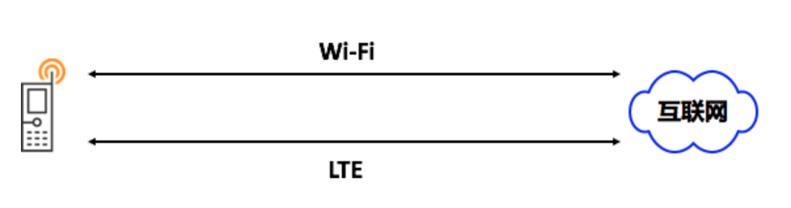
从硬件角度来说，WiFi和蜂窝网络属于基带芯片的不同模块，我们可以简单的把它们理解为类似双网卡的情形。所谓的Link Turbo就是在使用WiFi的同时使用移动网络加速。
可能有人会疑惑，我都已经连接WiFi了，为什么还要使用收费的移动网络呢？有这个疑问的人肯定没有试过使用公司网络打“王者”团战卡成狗的情形，其实WiFi可能会因为下面的一些原因导致很不稳定。
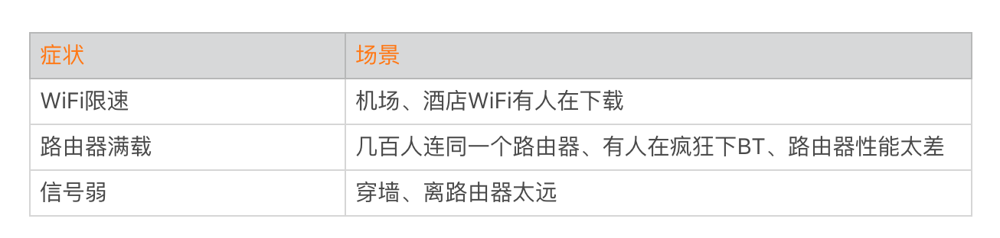
事实上，双通道的技术也并不是华为首发。类似iPhone的无线网络助理、小米和一加的自适应WLAN，它们都能在侦测到WiFi网络不稳定时，自动切换到移动网络。iPhone在连接WiFi的时候，移动网络也是依然可以连接的。
而Link Turbo硬核的地方在于可以同时使用两条通道传输数据，而且支持TCP与UDP。其中TCP支持使用的是开源的MultiPath TCP（iOS 7也有引入），而UDP则是华为自研的MultiPath UDP。
当然这个功能目前比较鸡肋，主要是由于一是覆盖的用户比较少，当前只有V20一台机器支持，而且还需要用户手动开启；二是改造成本，双通道需要我们的后台服务器也做一些改造才能支持。
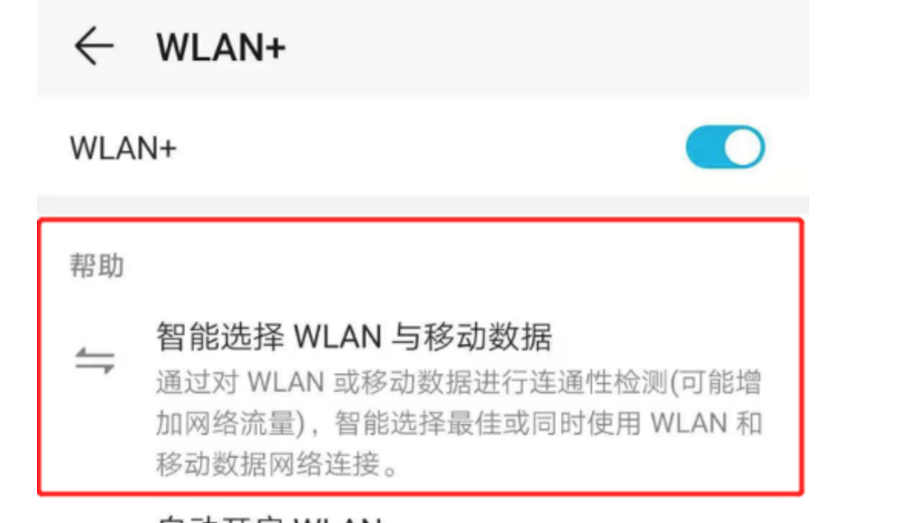
但是这项技术还是有一定的价值，一方面流量越来越便宜，很多用户不再那么care流量资费的问题。另一方面华为可以直接跟阿里云、华为云、腾讯云以及CDN服务商合作，屏蔽应用后台服务器的改造成本。目前爱奇艺、斗鱼和映客这些应用都在尝试接入。
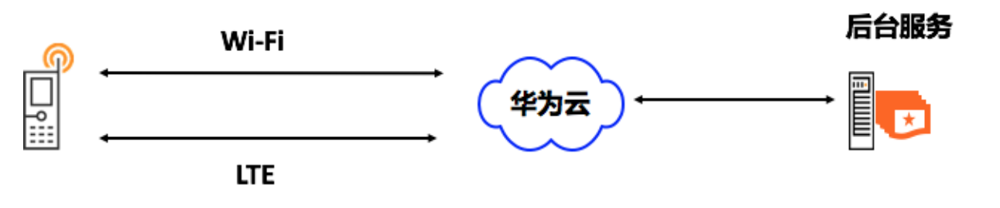
讲到这里你可能会问，为什么今天我会花这么多时间来讲Link Turbo技术？并不是因为我收了广告费，而是我发现很多时候在优化到一定程度之后，单靠应用本身很难再有大的突破。这个时候可能要考虑跟手机厂商、芯片厂商或者运营商合作，因此我们要随时关注行业的动态，并且清楚这些新技术背后的本质所在。
网络I/O
在前面的专栏里，我讲了文件I/O的处理流程以及不同I/O方式的使用场景，今天我们再一起来看看网络I/O跟文件I/O有哪些差异。
1. I/O模型
“一切皆文件”，Linux内核会把所有外部设备都看作一个文件来操作。在网络I/O中系统对一个 Socket的读写也会有相应的描述符，称为socket fd（Socket描述符）。
如下图以Socket读取数据recvfrom调用为例，它整个I/O流程分为两个阶段：
等待Socket数据准备好。
将数据从内核拷贝到应用进程中 。
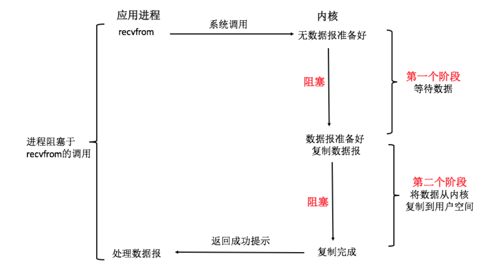
在《UNIX网络编程》中将UNIX网络I/O模型分为以下五种。
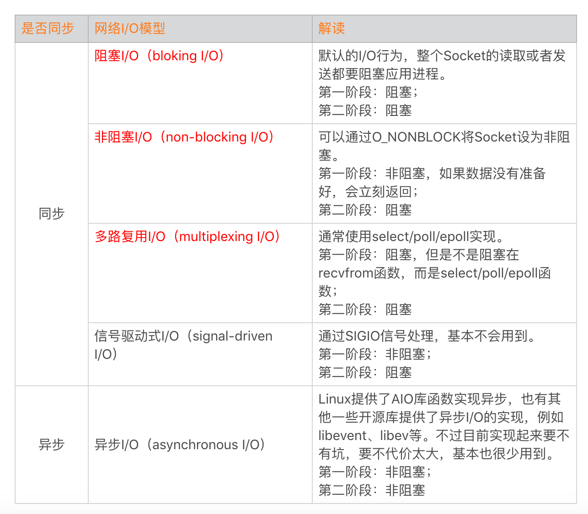
在开发过程中，比较常用的有阻塞I/O、非阻塞I/O以及多路复用I/O。关于UNIX网络I/O模型的更多资料，你可以参考《UNIX网络编程》第六章、《聊聊Linux五种I/O模型》、《Unix网络I/O模型及Linux的I/O多路复用模型》。
在查资料的时候我发现网上有很多文章的描述还是存在问题的，我们需要辩证地看。
多路复用I/O一定比阻塞I/O要好？跟文件I/O一样，最简单的I/O并发方式就是多线程+阻塞I/O。如果我们同一时间活动的网络连接非常多，使用多路复用I/O性能的确更好。但是对于客户端来说，这个假设不一定成立。对于多路复用I/O来说，整个流程会增加大量的select/epoll这样的系统调用，不一定比阻塞I/O要快。
epoll一定比select/poll要好？如果同一时间的连接数非常少的情况，select的性能不会比epoll，很多时候会比epoll更好。
epoll使用了mmap减少内核到用户空间的拷贝？网上很多的文章都说epoll使用了mmap的技术，但是我查看了Linux与Android的epoll实现，并没有找到相关的实现。而且我个人认为也不太可能会这样实现，因为直接共享内存可能会引发比较大的安全漏洞。
2. 数据处理
在下一期我还会跟你一起分析当前一些热门网络库的I/O模型，现在我们再往底层走走，看看底层收发包的流程是怎么样的。
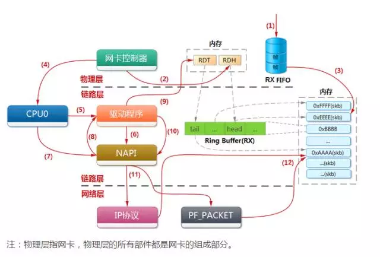
跟文件I/O一样，网络I/O也使用了中断。不过网络I/O的中断会更加复杂一些，它同时使用了软中断和硬中断。通过硬中断通知CPU有数据来了，但这个处理会非常轻量。耗时的操作移到软中断处理函数里面来慢慢处理。其中查看系统软中断可以通过/proc/softirqs文件，查看硬中断可以通过/proc/interrupts文件。
关于网卡收发包的流程网上的资料不多，感兴趣的同学可以参考下面几篇文章：
考虑到这块比较复杂，我在专栏里提供给你参考资料，有兴趣的同学可以进一步深入研究。
网络性能评估
我们常说的网络性能优化，通常都优化哪些方面呢？有的同学可能会关注网络的带宽和服务器成本，特别是直播、视频类的企业，这部分的成本非常高昂。虽然有的时候会做一些取舍，但是用户的访问速度与体验是所有应用的一致追求。
1. 延迟与带宽
如果说速度是关键，那对网络传输速度有决定性影响的主要有以下两个方面：
延迟：数据从信息源发送到目的地所需的时间。
带宽：逻辑或物理通信路径最大的吞吐量。
回想一下文件I/O性能评估似乎已经很复杂了，但是它至少整个流程都在手机系统内部。对于网络来说，整个流程涉及的链路就更加复杂了。一个数据包从手机出发要经过无线网络、核心网络以及外部网络（互联网），才能到达我们的服务器。
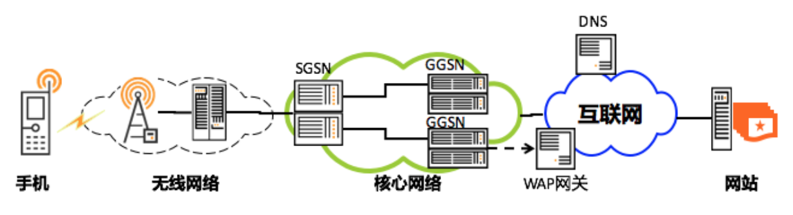
那延迟和带宽又跟什么因素有关呢？这里面涉及的因素也非常多，例如信号的强度、附近有没有基站、距离有多远等；还跟使用的网络制式，正在使用3G、4G还是5G网络有关，并且网络的拥塞情况也会产生影响，比如是不是在几万人聚集的大型活动场所等。
下面是不同网络制式的带宽和延迟的一般参考值，你可以在脑海里建立一个大致的印象。
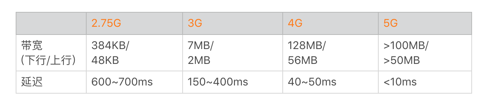
当出现上面说到的那些因素时，网络访问的带宽要大打折扣，延迟会加倍放大。而高延迟、低带宽的网络场景也就是我们常说的“弱网络”，它主要特点有：
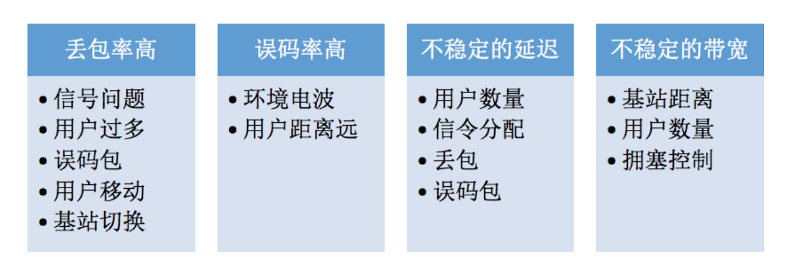
关于“弱网络”如何进行优化，我在微信时针对弱网络优化投入了大量的精力，这也是我在下一期所要讲的重点。不过我想说的是，即使未来5G普及了，但是各种各样的影响因素依然存在，弱网络优化这个课题是有长期存在的价值。
另外一个方面，不同的应用对延迟和带宽的侧重点可能不太一样。对于直播类应用或者“王者荣耀”来说，延迟会更重要一些；对腾讯视频、爱奇艺这种点播的应用来说，带宽会更加重要一些。网络优化需要结合自己应用的实际情况来综合考虑。
2. 性能测量
正如文件I/O测量一样，有哪些方法可以帮助我们评估网络的性能呢？
对于网络来说，我们关心的是下面这些指标：
吞吐量：网络接口接收和传输的每秒字节数。
延迟：系统调用发送/接收延时、连接延迟、首包延迟、网络往返时间等。
连接数：每秒的连接数。
错误：丢包计数、超时等。
Linux提供了大量的网络性能分析工具，下面这些工具是Android支持并且比较实用的，这些工具完整的功能请参考文档或者网上其他资料，这里就不再赘述了。
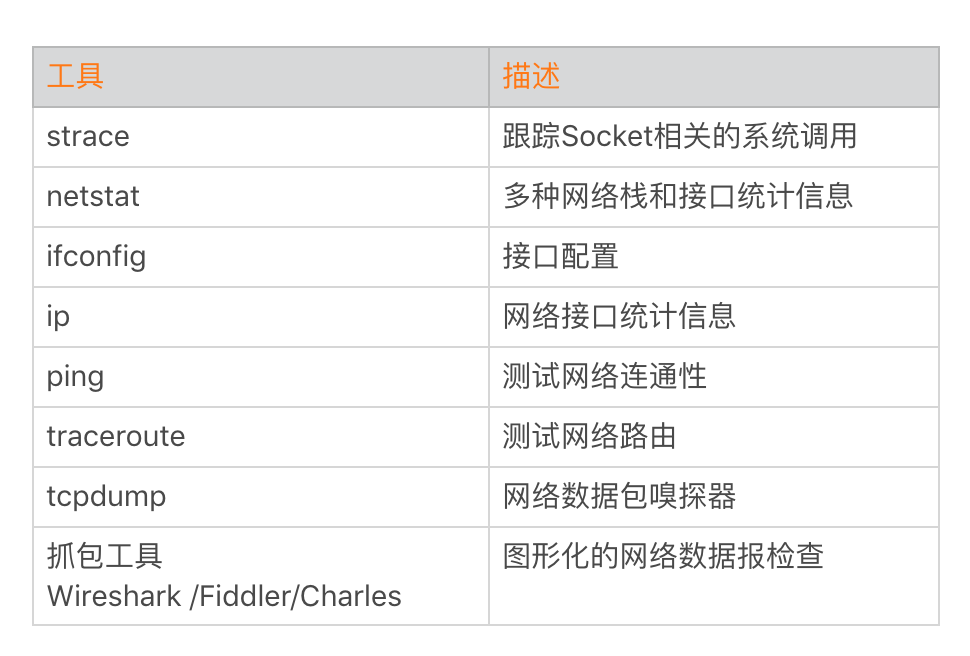
如果你对Linux底层更加熟悉，可以直接查看/proc/net，它里面包含了许多网络统计信息的文件。例如Android的TrafficState接口就是利用/proc/net/xt_qtaguid/stats和/proc/net/xt_qtaguid/iface_stat_fmt文件来统计应用的流量信息。
总结
从网络通信发展的历程来说，从2G到4G经历了十几年的时间，这背后离不开几百万个基站、几亿个路由器以及各种各样的专利支持。虽然网络标准不停地演进，不过受限于基建，它的速度看起来很快，但是又很慢。
那对我们自己或者应用会有哪些思考呢？HTTP 2.0、HTTP 3.0（QUIC）等网络技术一直在向前演进，我们需要坚持不懈地学习，思考它们对我们可以产生哪些影响，这是对网络“快”的思考。TCP和UDP协议、弱网络等很多东西在这二十多年来依然没有太大的改变，网络的基础知识对我们来说还是非常重要的，这是对网络“慢”的思考。
课后作业
在讲Link Turbo的时候我说过，iPhone的无线网络助理、小米和一加的自适应WLAN它们在检测WiFi不稳定时会自动切换到移动网络。那请你思考一下，它们是如何实现侦测，如何区分是应用后台服务器出问题还是WiFi本身有问题呢？今天的作业是在留言区写写你对这个问题的看法，欢迎留言跟我和其他同学一起讨论。
今天我推荐一本必读的网络书籍：《Web性能权威指南》，它里面第一句话就讲得非常好，我把它分享给你：“合格的开发者知道怎么做，而优秀的开发者知道为什么那么做”。
对于想进一步深入研究的同学，你可以研读这些书籍：
《UNIX网络编程》
《TCP/IP详解 卷1：协议》
欢迎你点击“请朋友读”，把今天的内容分享给好友，邀请他一起学习。最后别忘了在评论区提交今天的作业，我也为认真完成作业的同学准备了丰厚的“学习加油礼包”，期待与你一起切磋进步哦。
© 2019 - 2023 Liangliang Lee. Powered by gin and hexo-theme-book.